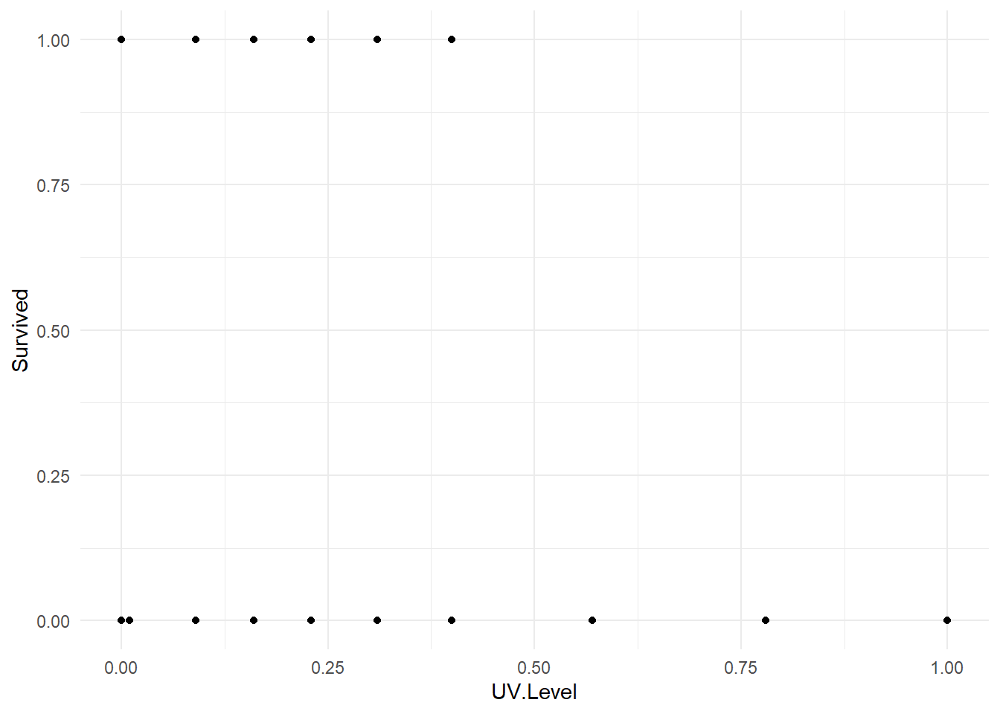
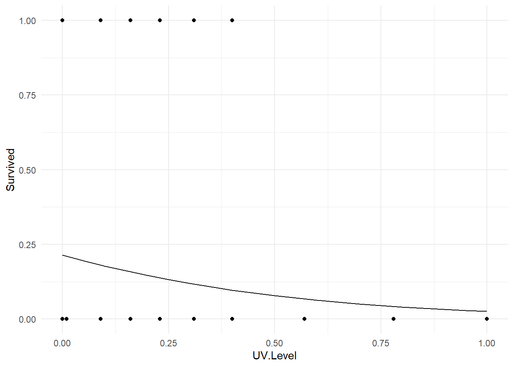

Chapter 12 Logistic Regression
Earlier, we introduced diagnostics to check the assumptions in a standard regression analysis. Recall these assumptions were that the errors \(\varepsilon_i\) are independent \(N(0, \sigma^2)\); i.e.,
- the \(\varepsilon_i\) are independent.
- the \(\varepsilon_i\) have constant variance,
- the \(\varepsilon_i\) are normally distributed,
In many cases, remedial measures such as transformations, weighted least squares, etc., can help validate the assumptions. However, some kinds of responses by their very nature will violate these assumptions. An easy-to-see example is the dichotomous responses from the previous chapter (odds of surviving the sinking of the Titanic). In cases like this, it is much preferable to apply an appropriate modeling technique that acknowledges the true nature of the response, rather than putting the data through contortions in an attempt to “fit a square peg in a round hole.”
Example: Predicting an election outcome. Suppose we are interested in factors that influence whether or not a political candidate wins an election. Predictor variables might include the amount of money spent on the campaign, the amount of time spent campaigning negatively, whether or not the candidate is an incumbent, etc.
What makes this problem different from problems we’ve seen before? It’s that the outcome (i.e., the response variable \(Y\)) is not quantitative; rather, it is binary: the outcome is “win” or “lose.” We could code these numerically as 0 and 1 (lose = 0, win = 1). Because the response variable is binary, we need to use a model that handles binary outcomes correctly.
In situations as the above we use a Generalized Linear Model, or GLM. A GLM is a “generalization” of the ideas in the more typical “normal” regression modeling, but with the following added flexibility:
- Errors, and thus the response variable, need not be normally distributed. For binary data, a more appropriate choice for the errors is the binomial distribution. For count data, the Poisson distribution may be a more appropriate choice. Most introductory statistics textbooks cover these distributions in detail.
- Error variance need not be constant. In fact, part of the reason the binomial and Poisson distributions are more appropriate in certain cases is because in these distributions, the mean and variance are linked: so if the mean changes, so does the variance. It’s a built-in property.
- Linearity is not assumed. In GLM, we use what is known as a link function \(g(Y)\) to connect the response \(Y\) to the linear combination of the predictors \(\beta_0 + \beta_1 X_1 + \beta_2 X_2 + \ldots + \beta_k X_k\) on the right-hand side of our model.
If the response \(Y\) is binary (0 or 1), we can view the property of interested for the response response to be the probability of an event occurring. For example, if win = 1 and lose = 0, then we can think of the underlying problem as modeling the probability of winning the election, \(P(win)\). We then use regression to model the likelihood of winning as a function of the predictors (amount of money spent on the campaign, etc.). We might even like to predict the probability of winning based on the specific amount of money spent on the campaign, the amount of time spent campaigning negatively, whether or not the candidate is an incumbent, etc. From this perspective, clearly the response \(Y = P(win)\) must be between 0 and 1, because probabilities must be between 0 and 1. However, standard regression methods do not ensure this will happen (e.g., what if your model predicted a 113% chance of winning the election?!). The use of an appropriate link function will ensure an appropriate prediction.
12.1 Logistic Model
From a practical standpoint, logistic regression and least squares regression are similar. Both methods produce prediction equations. In both cases, the regression \(\beta\)-coefficients measure the predictive capability of the predictor variables.
The response variable that characterizes logistic regression is what makes it special. With linear least squares regression, the response variable \(Y\) is a quantitative variable. With logistic regression, the response variable is an indicator of some characteristic; that is, a 0 or 1 variable. Logistic regression is used to determine whether other measurements are related to the presence or absence of some characteristic.
Here are a few examples of problems suited to logistic regression:
- Loan defaults. With the mortgage loan crisis afflicting the markets during the 2007-2009 recession, it is especially important for banks to know whether a prospective borrower will be at a high risk of defaulting on a loan. Historical data for past borrowers might includes annual income, amount of the loan, amount in savings or assets, years of work, and credit rating as predictors. The outcome of interest is whether or not a borrower defaulted on their loan.
- Heart attack risk. We wish to study the influence of age, gender and exercise on whether or not someone has a heart attack. Again, we have a binary response variable, whether or not a heart attack occurs.
- Graduate school admission. How do predictors such as GRE (Graduate Record Exam) scores, GPA, and prestige of the undergraduate program effect admission into graduate school? The response variable, whether or not a student is admitted, is a binary variable.
While the response variable in a logistic regression is a 0/1 variable, the logistic regression equation, which is a linear equation, does not predict the 0/1 variable itself. Instead, logistic regression predicts the probability that an indicator variable is equal to 1. To be more precise, a logistic regression equation does not directly predict the probability that the indicator is equal to 1, \(P(Y = 1)\). Rather, it predicts the log odds that an observation will have an indicator equal to 1.
Odds. The odds of an event is defined as the ratio of the probability that an event occurs to the probability that it fails to occur. Let \(p\) denote the probability of an event of interest occurring, i.e., let \(p = P(Y = 1)\). Then the odds of the event is given by \(p/(1-p)\)
The general form of a (multiple) logistic regression model always expressed in terms of the log odds:
\[\log\left(\frac{p}{1-p}\right) = \beta_0 + \beta_1 X_1 + \beta_2 X_2 + \ldots \beta_k X_k\] The link function \(\log\left(p/(1-p)\right)\) is call the logit transformation. The logit ensures that our model will produce estimates of \(p\) between 0 and 1. The quantity \(p/(1 – p)\) is the odds of the event of interest occurring. The only downside of this transformation is that the linear predictor \(\beta_0 + \beta_1 X_1 + \beta_2 X_2 + \ldots \beta_k X_k\) is in terms of “log odds,” which is not easy to interpret. However, once we fit a model, we can back-transform in order to express our predictions as probabilities.
Here are some facts to keep in mind:
- Probabilities of events (e.g. \(p\)) must lie between 0 and 1, with 1⁄2 as a neutral value for which both outcomes are equally likely. The constraints at 0 and 1 make it impossible to construct a linear equation for predicting probabilities.
- Odds, on the other hand, lie between 0 and \(+\infty\), with 1 as a neutral value for which both outcomes are equally likely.
- Odds are asymmetric: when the roles of the two outcomes are switched, each value in the range 0 to 1 is transformed by taking its inverse (1/value) to a value in the range 1 to \(+\infty\). For example, if the odds of having a low birthweight baby are 1/4, then the odds of not having a low birth weight baby is 4/1.
- Log odds are symmetric. They lie in the range \(-\infty\) to \(+\infty\). The value for which both outcomes are equally likely is 0. When the roles of the two outcomes are switched, the log odds are multiplied by –1, since \(\log(a/b) = –\log(b/a)\). For example, if the log odds of having a low birth weight baby are –1.39, the odds of not having a low birth weight baby are 1.39.
Those new to log odds can take comfort in knowing that as the probability of something increases, the odds and log odds increase too. Talking about the behavior of the log odds an event is qualitatively the same thing as talking about the behavior of the probability of the event. Because log odds take on any value between \(-\infty\) to \(+\infty\), the \(\beta\)-coefficients from a logistic regression equation can be interpreted in the usual way, namely, they represent the change in log odds of the response per unit change in the predictor.
Example. Suppose we fit a logistic regression model to a sample of postmenopausal women, where the response variable \(Y\) equals 1 if a subject is osteoporotic and 0 otherwise. The predictor variable of interest is age.
Let \(p\) = the probability that a postmenopausal woman is osteoporotic. Suppose our fitted model is
\[\log\left(\frac{\hat{p}}{1-\hat{p}}\right) = -4353 + 0.038(age)\]
Since the coefficient for age is positive, the log odds (and, therefore, the probability) of osteoporosis increases with age. Taking anti-logarithms of both sides gives
\[\frac{\hat{p}}{1-\hat{p}} = e^{-4353 + 0.038(age)}\]
With a little algebraic manipulation, one can express the fitted model in terms of the predicted probability of osteoporosis \(\hat{\pi}\)
\[\hat{p} = \displaystyle\frac{\displaystyle e^{-4353 + 0.038(age)}}{\displaystyle 1+e^{-4353 + 0.038(age)}}\]
We’ll see what such an equation looks like plotted with a later example.
12.2 Fitting, Interpreting and assessing a logistic model
If \(b_1\) is the “slope” estimate for age in the logistic regression example above, then \(e^b_1\) is the odds ratio corresponding to a one unit increase in age. For example, if age equals some amount \(w\), then the predicted odds of having osterporosis at age \(w\) is given by
\[e^{-4.53 + 0.038w}\]
while one year later (i.e. at age \(w + 1\)) the predicted odds are given by
\[e^{-4.53 + 0.038(w+1)}\] Dividing one equation by the other yields something interesting:
\[\frac{odds~of~osteroporosis~at~age=w+1}{odds~of~osteroporosis~at~age=w} = \frac{e^{-4.53 + 0.038(w+1)}}{e^{-4.53 + 0.038(w)}} = e^{0.038} = 1.0387\]
Thus, the odds that an older female has osteoporosis are 1.0387 times the odds of an female one year younger. This may alternatively be stated to mean that the odds of osteoporosis increases 3.87% over that of a younger individual with each year of age. Note that this percentage change in the odds is \(e^b_1 − 1\). For a 10 year age difference, the increase is \(e^{b_1\times 10} = e^{(0.038\times 10)} = 1.0387^10 = 1.46\), or a 46% increase.
Example: Tadpole exposure to UV light. An experiment was performed that involved the exposure of 80 tadpoles to different level of ultraviolet light. There were 10 levels of UV light exposure (expressed as percentage of full exposure): 0% (dark), 1%, 9%, 16%, 23%, 31%, 40%, 57%, 78%, and 100%. The survival status of each tadpole is recorded after 21 days (variable Survival: 0=died, 1=survived). The researcher is most interested in looking at how well UV exposure predicts mortality. (The data are courtesy of Claire Meikle, and appear in the R workspace tadpoleUV.RData.)
load("tadpoleUV.RData")
head(tadUV)## Day.Exposed UV.Level Days.survived Survived
## 1 2 0.01 7 0
## 2 2 1.00 1 0
## 3 2 0.23 2 0
## 4 1 0.00 9 0
## 5 1 0.16 19 0
## 6 1 0.16 5 0First, we must recognize that the response variable, Survived, is a binary variable. The predictor of survival in the model is UV.Level. A plot of the data is below, and might look a little strange compared to data plots we’ve seen to date.
ggplot(tadUV) +
geom_point(aes(x=UV.Level, y=Survived)) +
theme_minimal()
One thing we can see is that there is a higher prevalence of mortality under higher UV conditions. So there may be an association between survival and exposure.
We model \(p = P(survival)\) as a function of UV level as follows:
tadpole.fit <- glm(Survived ~ UV.Level, data=tadUV, family=binomial)
summary(tadpole.fit)##
## Call:
## glm(formula = Survived ~ UV.Level, family = binomial, data = tadUV)
##
## Deviance Residuals:
## Min 1Q Median 3Q Max
## -0.694 -0.632 -0.451 -0.294 2.161
##
## Coefficients:
## Estimate Std. Error z value Pr(>|z|)
## (Intercept) -1.300 0.464 -2.80 0.0051 **
## UV.Level -2.330 1.471 -1.58 0.1131
## ---
## Signif. codes: 0 '***' 0.001 '**' 0.01 '*' 0.05 '.' 0.1 ' ' 1
##
## (Dispersion parameter for binomial family taken to be 1)
##
## Null deviance: 60.283 on 79 degrees of freedom
## Residual deviance: 57.022 on 78 degrees of freedom
## AIC: 61.02
##
## Number of Fisher Scoring iterations: 5The fitted logistic regression model is \(\log\left(\frac{\hat{p}}{1-\hat{p}}\right) = -1.300 - 0.0233(UV~level)\).
Here is some model info and interpretation:
- In the summary table, the column
Pr(>|z|)contains the p-values for individual tests of model parameters. The row labeledUV.Levelis a test of \(H_0 : \beta_1 = 0\), i.e. whether UV level is a significant predictor of the probability of survival. Since the p-value is large (0.113) we conclude that there is no significant relationship between the probability of survival and UV level. This is known as the Wald test for parameter \(\beta_j\). - Even though there is not a significant relationship, we can still quantify this relationship by exponentiating \(b_1 = –0.0233\)
exp(coef(tadpole.fit)[2])## UV.Level
## 0.0972602Recall that the percentage change in the odds for each one unit increase in the predictor can be found via \(e^b_1 − 1\). Thus, percentage change in the odds of survival for each 1% increase in UV is \(0.9769658 – 1 = –0.023\); i.e., a 2.3% decrease in the survival odds per 1% increase in UV exposure.
- We can find Wald based confidence intervals for the percentage change in the odds by using the R function
confint()
exp(confint(tadpole.fit)) - 1## Waiting for profiling to be done...## 2.5 % 97.5 %
## (Intercept) -0.897605 -0.351891
## UV.Level -0.996857 0.192072Note that the CI for the percentage change in survival odds for a 1% increase in UV level contains 0, i.e. there is no significant effect on survival odds.
There is no whole-model \(F\)-test in logistic regression, but we can construct a whole-model test called a likelihood ratio chi-square test using the anova() model comparison function:
null.model <- glm(Survived ~ 1, data=tadUV, family=binomial)
anova(null.model, tadpole.fit, test="Chisq")## Analysis of Deviance Table
##
## Model 1: Survived ~ 1
## Model 2: Survived ~ UV.Level
## Resid. Df Resid. Dev Df Deviance Pr(>Chi)
## 1 79 60.28
## 2 78 57.02 1 3.262 0.0709 .
## ---
## Signif. codes: 0 '***' 0.001 '**' 0.01 '*' 0.05 '.' 0.1 ' ' 1The \(p\)-value is large (0.07092), indicating that the model fits are not significantly different; i.e., this result says that the model using UV level as a predictor is not significantly better than a model containing no predictors at all. This corroborates the earlier test result for \(\beta_1\).
Probability prediction. Since odds ratios can be hard to interpret, we can use predicted probabilities to interpret results. For example, here is how to have R obtain the predicted probability of tadpole survival at 40% UV exposure and 75% UV exposure:
predict(tadpole.fit, newdata=data.frame(UV.Level=0.40), type="response")## 1
## 0.0968759predict(tadpole.fit, newdata=data.frame(UV.Level=0.75), type="response")## 1
## 0.0453014Making a 2D plot. We can coerce R into making a plot of the fitted logistic regression model. Here is code to do it in the present example.
fake.tadpoles <- data.frame(UV.Level = seq(0, 1, 0.05) )
fake.tadpoles <- fake.tadpoles %>%
mutate(Fitted = predict(tadpole.fit, newdata=fake.tadpoles, type="response"))
ggplot(tadUV) +
geom_point(aes(x=UV.Level, y=Survived) ) +
geom_line(data=fake.tadpoles, aes(x=UV.Level, y=Fitted) ) +
theme_minimal()
The notions of logistic regression extend into multiple predictors, ANCOVA settings, variable selection, etc. We will see some of these applications in the below case study.
12.3 Case Study - Titanic Dataset
We are now going to use logistic regression for the Titanic dataset. Recall the basic format of the dataset
tail(titanic)## X Class Age Gender Survived
## 2196 2196 Crew Adult Female Yes
## 2197 2197 Crew Adult Female Yes
## 2198 2198 Crew Adult Female Yes
## 2199 2199 Crew Adult Female No
## 2200 2200 Crew Adult Female No
## 2201 2201 Crew Adult Female NoBy default, if we performed a logisitic regression with the Survived variable as the response, R would consider “No” to be a success (1) and “Yes” to be a failure (0) due to alphabetical ordering. We typically think of problems like this as a success being surviving! So we will create a new variable correspond to how we think of the problem.
titanic <- titanic %>%
mutate(Survive = ifelse(Survived=="Yes", 1, 0) )Now we will perform a logistic regression on the new variable Survive with Class, Age and Gender all being predictor variables. We note that all three predictor variables are factors.
titanic.fit1 <- glm(Survive ~ Class + Gender + Age, data=titanic, family="binomial")
summary(titanic.fit1)##
## Call:
## glm(formula = Survive ~ Class + Gender + Age, family = "binomial",
## data = titanic)
##
## Deviance Residuals:
## Min 1Q Median 3Q Max
## -2.081 -0.715 -0.666 0.686 2.128
##
## Coefficients:
## Estimate Std. Error z value Pr(>|z|)
## (Intercept) 2.044 0.168 12.17 < 2e-16 ***
## Class2 -1.018 0.196 -5.19 2.1e-07 ***
## Class3 -1.778 0.172 -10.36 < 2e-16 ***
## ClassCrew -0.858 0.157 -5.45 5.0e-08 ***
## GenderMale -2.420 0.140 -17.24 < 2e-16 ***
## AgeChild 1.062 0.244 4.35 1.4e-05 ***
## ---
## Signif. codes: 0 '***' 0.001 '**' 0.01 '*' 0.05 '.' 0.1 ' ' 1
##
## (Dispersion parameter for binomial family taken to be 1)
##
## Null deviance: 2769.5 on 2200 degrees of freedom
## Residual deviance: 2210.1 on 2195 degrees of freedom
## AIC: 2222
##
## Number of Fisher Scoring iterations: 4Not surprising given the contigency tables in the previous chapter, every predictor variable is significant. We need to consider the coefficients carefully.
(Intercept)- This corresponds to a first class adult female. We see the \(b_0 = 2.044\) which corresponds to a probability of surviving as \(e^{2.044}/(e^{2.044}+1) = 0.88534\), so roughly a 90% probability of surviving (recall from the previous chapter that 140 out of 144 first class adult female passengers survived, the difference has to do with the model structure compared to just calculuated an observed relative frequency).GenderMale- This is the influence of being a male compared to a first class adult women. So for a first class adult male, the probability of survival is \(e^{2.044-2.420}/(e^{2.044-2.420}+1) = 0.407092\) and recall that 57 of the 175 first class adult males survivied. Again, the difference between the observed relative frequency and the result of the logistic regression is the model structure (compared to just reporting a number).- Other variable can be interpreted in a similar fashion.
In the previous section we saw that some of these predictor variable may interact. That is, there seemed to be connection between some of the predictor variables. However, we also saw that some of the interactions resulted in a large number of 0 occurences. As such, here we consider a model with Gender and Class interacting (being part of the Crew or Third class and male was not good for your chances of surviving). So now we will consider a model with some interaction.
titanic.fit2 <- glm(Survive ~ Class * Gender + Age, data=titanic, family="binomial")
summary(titanic.fit2)##
## Call:
## glm(formula = Survive ~ Class * Gender + Age, family = "binomial",
## data = titanic)
##
## Deviance Residuals:
## Min 1Q Median 3Q Max
## -2.678 -0.710 -0.580 0.529 2.023
##
## Coefficients:
## Estimate Std. Error z value Pr(>|z|)
## (Intercept) 3.558 0.507 7.02 2.3e-12 ***
## Class2 -1.681 0.588 -2.86 0.0042 **
## Class3 -3.885 0.529 -7.35 2.0e-13 ***
## ClassCrew -1.661 0.800 -2.08 0.0380 *
## GenderMale -4.233 0.531 -7.97 1.6e-15 ***
## AgeChild 1.054 0.230 4.57 4.8e-06 ***
## Class2:GenderMale 0.448 0.646 0.69 0.4877
## Class3:GenderMale 2.863 0.563 5.08 3.7e-07 ***
## ClassCrew:GenderMale 1.086 0.820 1.33 0.1852
## ---
## Signif. codes: 0 '***' 0.001 '**' 0.01 '*' 0.05 '.' 0.1 ' ' 1
##
## (Dispersion parameter for binomial family taken to be 1)
##
## Null deviance: 2769.5 on 2200 degrees of freedom
## Residual deviance: 2143.4 on 2192 degrees of freedom
## AIC: 2161
##
## Number of Fisher Scoring iterations: 6Before proceding to interpret this model, let’s first ask if it imrpoves over the previous model. You’ll note that titanic.fit1 is a simpler version of titanic.fit2. We use the anova() function to test if adding the interaction terms significantly improves the model.
anova(titanic.fit1, titanic.fit2, test="Chisq")## Analysis of Deviance Table
##
## Model 1: Survive ~ Class + Gender + Age
## Model 2: Survive ~ Class * Gender + Age
## Resid. Df Resid. Dev Df Deviance Pr(>Chi)
## 1 2195 2210
## 2 2192 2143 3 66.67 2.21e-14 ***
## ---
## Signif. codes: 0 '***' 0.001 '**' 0.01 '*' 0.05 '.' 0.1 ' ' 1We see overwhelming support that the interactive model improves over the main effects model (\(p\)-value near zero). Interpreting this model is complicated:
(Intercept)- This corresponds to a first class adult female, and the probability of surviging is \(e^{3.558}/(e^{3.558}+1) = 0.972294\) which is much closer to the observed relative frequency of \(140/144 = 0.9722222\).AgeChild- This is the impact of being a child compared to a first class adult female. So \(e^{3.558+1.054}/(e^{3.558+1.054}+1)=0.991066\) is the probability of a first class female child surviving (there was only 1 on the titanic, and they survived).Class3:GenderMale- Interpreting the interaction terms is wonky and here is why. First consider the full model\[\textrm{logit}(p) = \beta_0 + \beta_1(Class2) + \beta_3(Class3) + \beta_4(Crew) + \beta_5(Male) + \beta_6(Child) + \beta_7(Class2Male) + \beta_8(Class3Male) + \beta_9(CrewMale)\]
For the
Class3:Maleterm to be in effect bothClass2andGenderMalewill be activated (remember everything is a 1 or 0 dummary variable). So interpretation of this interaction term actually involves many terms. The probability of a second class adult male surviving is \[\frac{e^{3.558-3.885-4.233+2.863}}{1+e^{3.558-3.885-4.233+2.863}} = 0.154857\] which is relativaly close to the \(75/(75+387) = 0.162338\) that did survive.
Overall we see this more complex model appears to more closely match the observed relative frequencies from the previous chapter. This is not too surprising given the measure of Residual deviance. Before explaining, let’s look at both fitted models one more time
summary(titanic.fit1)##
## Call:
## glm(formula = Survive ~ Class + Gender + Age, family = "binomial",
## data = titanic)
##
## Deviance Residuals:
## Min 1Q Median 3Q Max
## -2.081 -0.715 -0.666 0.686 2.128
##
## Coefficients:
## Estimate Std. Error z value Pr(>|z|)
## (Intercept) 2.044 0.168 12.17 < 2e-16 ***
## Class2 -1.018 0.196 -5.19 2.1e-07 ***
## Class3 -1.778 0.172 -10.36 < 2e-16 ***
## ClassCrew -0.858 0.157 -5.45 5.0e-08 ***
## GenderMale -2.420 0.140 -17.24 < 2e-16 ***
## AgeChild 1.062 0.244 4.35 1.4e-05 ***
## ---
## Signif. codes: 0 '***' 0.001 '**' 0.01 '*' 0.05 '.' 0.1 ' ' 1
##
## (Dispersion parameter for binomial family taken to be 1)
##
## Null deviance: 2769.5 on 2200 degrees of freedom
## Residual deviance: 2210.1 on 2195 degrees of freedom
## AIC: 2222
##
## Number of Fisher Scoring iterations: 4summary(titanic.fit2)##
## Call:
## glm(formula = Survive ~ Class * Gender + Age, family = "binomial",
## data = titanic)
##
## Deviance Residuals:
## Min 1Q Median 3Q Max
## -2.678 -0.710 -0.580 0.529 2.023
##
## Coefficients:
## Estimate Std. Error z value Pr(>|z|)
## (Intercept) 3.558 0.507 7.02 2.3e-12 ***
## Class2 -1.681 0.588 -2.86 0.0042 **
## Class3 -3.885 0.529 -7.35 2.0e-13 ***
## ClassCrew -1.661 0.800 -2.08 0.0380 *
## GenderMale -4.233 0.531 -7.97 1.6e-15 ***
## AgeChild 1.054 0.230 4.57 4.8e-06 ***
## Class2:GenderMale 0.448 0.646 0.69 0.4877
## Class3:GenderMale 2.863 0.563 5.08 3.7e-07 ***
## ClassCrew:GenderMale 1.086 0.820 1.33 0.1852
## ---
## Signif. codes: 0 '***' 0.001 '**' 0.01 '*' 0.05 '.' 0.1 ' ' 1
##
## (Dispersion parameter for binomial family taken to be 1)
##
## Null deviance: 2769.5 on 2200 degrees of freedom
## Residual deviance: 2143.4 on 2192 degrees of freedom
## AIC: 2161
##
## Number of Fisher Scoring iterations: 6Both model report a Null deviance: 2769.5 which can be loosely interpreted as the “error” in the most basic model, Survive ~ 1 (an intercept only model). The Residual deviance corresponds to the error of the fitted models. You’ll note that titanic.fit1 has a deviance of 2210.1 while titanic.fit2 has a smaller deviance of 2143.4, this we can argue is a better fit. The anova() function output tells us it is a significantly better fit.